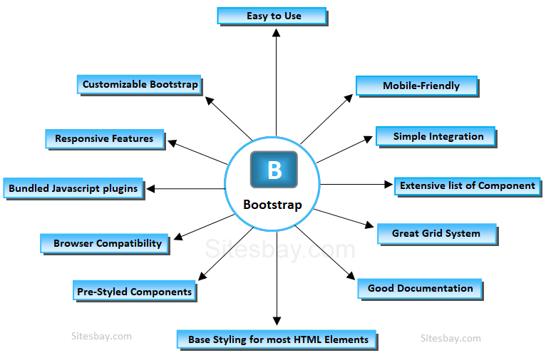

Estas son las características principales de Bootstrap, principalmente la versión 5.0
Bootstrap es modular y consiste esencialmente en una serie de hojas de estilo LESS que implementan la variedad de componentes de la herramienta. Una hoja de estilo llamada bootstrap.less incluye los componentes de las hojas de estilo. Los desarrolladores pueden adaptar el mismo archivo de Bootstrap, seleccionando los componentes que deseen usar en su proyecto. Los ajustes son posibles en una medida limitada a través de una hoja de estilo de configuración central. Los cambios más profundos son posibles mediante las declaraciones LESS. El uso del lenguaje de hojas de estilo LESS permite el uso de variables, funciones y operadores, selectores anidados, así como clases mixin. Desde la versión 2.0, la configuración de Bootstrap también tiene una opción especial de «Personalizar» en la documentación. Por otra parte, los desarrolladores eligen en un formulario los componentes y ajustes deseados, y de ser necesario, los valores de varias opciones a sus necesidades. El paquete consecuentemente generado ya incluye la hoja de estilo CSS compilada previamente. Sistema de cuadrilla y diseño sensible Bootstrap viene con una disposición de cuadrilla estándar de 940 píxeles de ancho. Alternativamente, el desarrollador puede usar un diseño de ancho-variable. Para ambos casos, la herramienta tiene cuatro variaciones para hacer uso de distintas resoluciones y tipos de dispositivos: teléfonos móviles, formato vertical y horizontal, tabletas y computadoras con baja y alta resolución (pantalla ancha). Esto ajusta el ancho de las columnas automáticamente. Comprensión de la hoja de estilo CSS Bootstrap proporciona un conjunto de hojas de estilo que proveen definiciones básicas de estilo para todos los elementos de HTML. Esto otorga una uniformidad al navegador y al sistema de anchura, da una apariencia moderna para el formateo de los elementos de texto, tablas y formularios. Componentes re-utilizables Además de los elementos regulares de HTML, Bootstrap contiene otra interfaz de elementos comúnmente usados. Esta incluye botones con características avanzadas (p.ej. grupo de botones o botones con opción de menú desplegable, listas de navegación, etiquetas horizontales y verticales, ruta de navegación, paginación, etc.), etiquetas, capacidades avanzadas de miniaturas tipográficas, formatos para mensajes de alerta y barras de progreso. Plug-ins de JavaScript Los componentes de JavaScript para Bootstrap están basados en la librería jQuery de JavaScript. Los plug-ins se encuentran en la herramienta de plug-in de jQuery. Proveen elementos adicionales de interfaz de usuario como diálogos, tooltips y carruseles. También extienden la funcionalidad de algunos elementos de interfaz existentes, incluyendo por ejemplo una función de auto-completar para campos de entrada (input). La versión 2.0 soporta los siguientes plug-ins de JavaScript: Modal, Dropdown, Scrollspy, Tab, Tooltip, Popover, Alert, Button, Collapse, Carousel y Typeahead. Una implementación de Bootstrap usando el Dojo toolkit también está disponible. Es llamada Dojo Bootstrap67 y es un puerto de los plug-ins de Twitter Bootstrap. Usa el código Dojo al 100% y tiene soporte para AMD (Asynchronous Module Definition8).
